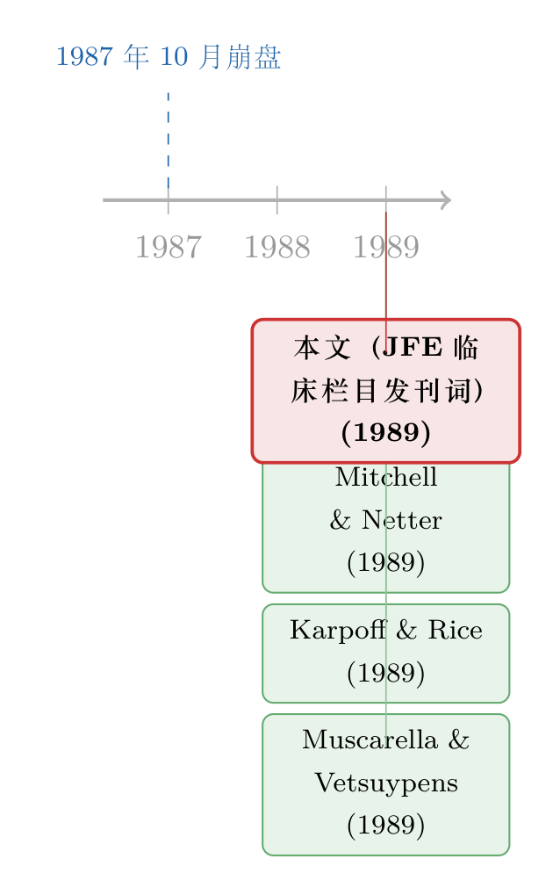

一本顶刊为什么要专门开一个『讲个案』的栏目
本文读的是 Jensen, Fama, Long, Ruback, Schwert, Smith & Warner (1989, Journal of Financial Economics)：这不是一篇实证论文，而是 JFE 为新开设的「临床论文 (Clinical Papers)」栏目写的一篇发刊词。七位编辑——名字几乎就是半部现代金融学史——想回答一个看似奇怪的问题：一本以严谨实证和理论著称的顶刊，为什么要专门腾出版面，去刊登那些「只研究一个公司、一桩事件、一小撮个案」的文章？他们的答案是：因为完美市场理论已经成熟，真正稀缺的，是那种能告诉我们「世界上哪一种不完美才真正要紧」的研究。
1 引言：一篇没有数据、却想改写研究议程的「论文」
先说一个反常的画面。
1989 年，《金融经济学杂志》(Journal of Financial Economics, JFE) 的这一期里，破天荒地出现了一个新栏目，叫「临床论文」。栏目的发刊词，署了整整七个名字：Michael Jensen、Eugene Fama、John Long、Richard Ruback、G. William Schwert、Clifford Smith、Jerold Warner。对今天的我们来说，这几乎是一份「现代金融学名人堂」的点名册。这样一群人，本可以继续生产那些动辄上千家公司、几十年面板数据的大样本实证，却联名写了一篇没有一个回归系数、没有一张表的短文，去为「研究单个个案」这件事辩护。
这件事本身就值得停下来想一想。
因为「临床 (clinical)」这个词，是从医学里借来的。医学文献里，最不起眼、却又最离不开的一类文章，就是个案报告——一个罕见病人、一种异常反应、一桩没人见过的并发症。它从不声称自己证明了什么普适规律，它只是忠实地记录「世界上确实发生了这样一件事」。编辑们想说的是：金融学也需要这样的东西。
但一个自然的问题马上就来了：金融学不是一直以追求一般化、可证伪的理论为荣吗？一篇只讲一家公司的文章，凭什么配得上 JFE 的版面？要回答这个问题，得先绕一个看似无关的弯子，去看看金融学这门学科当时正卡在哪儿。
2 完美市场，与那「无穷多个」可能性定理
故事要从 完美市场理论 (perfect market theory) 讲起。
编辑们的叙述很有意思：在 1950 年代末到 1960 年代，金融学经历了一场革命——人们假设所有个人与组织都在一个「零交易成本、零信息成本」的世界里追求价值最大化。这个理论先被用来解释股价行为，接着扩展到公司金融、资本资产定价、再到或有索取权 (contingent claims) 的定价。随后的二十年，它被打磨得极其完善，并从金融学一路蔓延到整个经济学。（顺带一提，编辑们专门吐槽了「perfect」这个词起得不好：一个人人自利、且要消耗资源去完成交易和获取信息的世界，本身并没有什么「不完美」可言。）
然后呢？然后就出现了边际收益递减。
理论成熟了，新东西越来越难做了。于是金融经济学家开始转向——放松完美市场的各种假设，把注意力转到税收、代理成本 (agency costs)、信息效应上来。这听起来是顺理成章的进步。可编辑们在这里下了一句很重的判断，也是全文真正的「张力」所在：
完美市场理论只有一个，定义清晰、唯一确定；但与之对应的不完美市场理论，却有无穷多个——因为放松假设的方式可以有无穷多种组合。
这就是麻烦的根源。一旦你允许「市场不完美」，你就打开了一个无底洞。任何人都可以构造一个逻辑自洽、却跟现实毫无关系的不完美模型。编辑们给这类东西起了一个相当刻薄的名字——「可能性定理 (possibility theorems)」：这些命题在逻辑上完全正确，但解释任何真实现象的概率几乎为零。
这里要分清楚：「逻辑正确」和「与世界相关」是两回事。一个可能性定理可以推导得天衣无缝，却仍然是空中楼阁。真正值得研究的不完美市场理论，是那些有合理概率解释现实的那一小撮。问题在于——你怎么从无穷多个可能性里，把这一小撮挑出来？
而且这个病，理论一侧和实证一侧都没躲过。编辑们的批评相当不留情面：在资本市场领域，越来越精巧的计量技术，被用到越来越不相关的估计问题上，而这些问题的来源「是期刊文献本身，而不是真实世界」；在公司金融领域，人们测量着越来越晦涩的决策和事件的估值后果，却没有一个框架，把这些发现连回任何有趣的问题。
一句话：这门学科有自我循环、自我喂养的危险——从期刊里长出问题，再回到期刊里发表答案，越转离世界越远。
3 临床研究：一把把理论「拽回地面」的钩子
讲到这里，临床论文的位置就清楚了。
它要解决的，正是「无穷多个可能性定理」这个筛选难题。编辑们的核心论点是：临床研究，能引导理论家和实证家走向那些「经验上真正相关」的不完美市场理论，办法是——对一个现象的关键维度，做深入的、就事论事的剖析。
这句话值得拆开看。一篇成功的临床论文，影响的不只是大样本实证学者关心什么问题、收集什么数据；它还会影响理论家在建模时所用的那些「简化设定」和「典型化假设 (stylized characterizations)」。而关键就在于这些设定的来源：
直接从世界里抽取出来的典型化设定，比那些从期刊文献里、或者纯粹从研究者想象里来的设定，更有可能是富有成效的。
这是一个朴素却深刻的方法论主张。理论模型总要从某个简化的「故事」出发，那么这个故事最好是真实世界塞给你的，而不是你为了数学上的方便编出来的。临床论文干的，就是把这些「真实的故事」搬运到学术共同体面前。
接着，一个更现实的理由浮出来了：世界变得太快。融资技术的创新、放松管制、再管制、商业组织与运作方式的变化，都在飞速发生；新产品、新做法层出不穷，金融机构的角色和活动也在剧变。这些变化本身，恰恰是对现有主流理论的检验，又会催生新的、有理论价值的问题。可大样本实证天然是「滞后」的——你得等数据积累够了才能做。临床论文却可以在事件发生的当下，第一时间把它记录、传达给科学共同体。
于是分工出现了。编辑们用「专业化的好处」来解释：不同的研究者会分别聚焦于理论、实证检验、和临床研究三件事，而这三者是互补的——
- 理论为实证和临床提供逻辑约束和精确假设；
- 实证检验通过识别出「不相关的模型」来给理论家指路，并提示临床研究该去哪里找反例；
- 临床研究则为理论和实证设定议程 (set the agenda)。
正因为这种互补性，以及三群人之间沟通的重要性，JFE 承诺三类研究都发。这是一个关于学科如何健康运转的生态学主张，而不只是一个编辑政策。
（关于一本顶刊如何把自己活成一套生态系统、甚至一道供求曲线，可参见《一本顶刊，把自己活成了一道供求曲线》；而关于这群编辑里最锋利的那一位的方法论，可参见《三块积木：那个被「代理理论」盖住的实证 Jensen》。）
4 一篇好的临床论文，到底该怎么评？
但这里立刻冒出一个尖锐的实务问题：临床论文既然「不一样」，那评审标准是不是也要不一样？会不会变成放水？
编辑们的回答很审慎。他们承认：目前还没有公认的临床金融论文「范式 (model)」，相关的原则要在实践中慢慢摸索。但他们提出了一个对所有论文都适用、而临床论文尤其需要的原则——
编辑和审稿人必须避免：用「整个科学过程」的标准，去要求「单独一篇论文」。一篇论文——无论临床、理论还是实证——的质量，不应以它是否「确定无疑地提出并回答了一个重大问题」来评判。这样的答案，几乎从来不是由任何单篇论文给出的，而是整个科学过程（包括复制与拓展）的结果。
这是全文我最欣赏的一句话。它其实是在替「不完整」辩护：科学是接力，不是一锤定音。
在这个前提下，编辑们给临床论文定了一个偏移了重心的评价标准。他们承认临床论文在形式、范围、内容上会不一样，往往更具推测性 (conjectural)，处理的问题更难量化、更偏描述与规范。于是——
评价过程将更看重临床论文是否为这个行业提出了新问题或新谜题 (raise new questions or puzzles)，而不是它是否提供了新答案。
这句话几乎是把传统实证论文的评分卡反过来用了。背后的逻辑是：科学史上最重要的贡献，常常是那些「提出一个新问题、或用新颖方式重提一个老问题」的论文，而不是给出标准答案的论文。一篇成功的临床论文，要在「保留世界的本质」和「在描述与理论上实现简约 (parsimony)」之间取得平衡——既不能把世界抽象没了，也不能事无巨细地堆砌。
5 同一期里的五个样本：临床研究长什么样
光讲道理是空的。这一期同时刊出了五篇临床论文，编辑们逐一点评，等于给「什么叫好的临床研究」配了五张实拍图。我把它们按编辑给出的关键数字复述一遍：
其一，Scholes 与 Wolfson 描述了他们自己设计的一套交易系统，用来检验「公司折价购股计划 (discount stock purchase plans)」里的交易利润。他们在两年里实打实赚了约 $400,000。编辑们的解读很克制：这笔利润并不说明股价是错的，但它确实表明，投资者并没有对这些计划里的获利机会做出即时反应；它同时对投资银行服务市场的效率提出了疑问。最妙的是那句寓意——它会提醒学生和学者：资本市场高度有效，但「有效」并不意味着创业精神、主动性和创新就拿不到回报。
其二，Mitchell 与 Netter 分析了 1987 年 10 月 14–16 日股市超过 10% 的下跌——这是紧挨着 10 月 19 日大崩盘之前的「预跌」，其幅度超过了过去 47 年里任何一次一日、两日或三日的跌幅。他们给出的证据是：真正的「肇事事件」，是美国众议院筹款委员会在 10 月 13 日提出、并于 10 月 15 日通过的那份含有强力反收购条款的税法案。这次预跌，很可能在触发 10 月 19 日那场 22.6% 的崩盘所伴随的交易与缔约机制崩溃中，扮演了重要角色。
其三，Karpoff 与 Rice 研究了一个绝佳的「自然实验」：13 家阿拉斯加原住民 (ANCSA) 区域性公司，其普通股被法律强制规定为不可转让 (nontransferable)。他们发现，这些公司频繁发生控制权争夺、董事与经理高度流动，并且已经耗散掉了 ANCSA 立法赋予它们的大部分财富——「几乎十亿美元和四千万英亩的阿拉斯加土地」。编辑们特别点明：这是一个「在传统 JFE 文章里很难呈现」的重要问题。换句话说，正因为它「非标准」，临床栏目才有存在的意义。
其四，Christensen、Moore 与 Roenfeldt 通过测量「把资产从公司搬到 主有限合伙 (master limited partnerships, MLP)」的估值效应，研究了组织形式的作用。他们发现，把资产「卷出 (rollout)」进这些合伙制，会提高股权价值，而这与税收优势、自由现金流 (free cash flow) 的减少、以及信息信号是一致的。（这里的「自由现金流」直接呼应 Jensen 自己最著名的那条假说，参见《现金为什么一定要「还」出去？——四十年后，重读 Jensen 的自由现金流》。）
其五，Muscarella 与 Vetsuypens 检验了 38 家「自己承销自己」的投资银行 IPO 的折价 (underpricing)。逻辑是这样的：如果折价像 Baron 的模型所说的那样，源于发行人与承销商之间的信息不对称，那么这些「自承销」的发行就应该更少折价——因为发行人和承销商成了同一个人，信息鸿沟消失了。可数据偏偏说：这些自承销发行的折价，和其他 IPO没什么两样。这是一个漂亮的反例：它用一个干净的个案，对一个流行理论的核心机制提出了质疑。（这条思路后来被反复使用，参见《把承销商和发行人变成同一个人，新股还会打折吗？》。）
五篇放在一起，你能看出编辑们想示范的「临床方法学」：要么用一个被法律或制度「锁死」的特例（不可转让股、自承销）去逼出一个干净的对照；要么用一桩具体事件（10 月预跌、折价购股计划）去检验一个一般理论。它们都不追求一锤定音，但每一篇都「提出了新问题」。
6 文献脉络：从完美市场，到「哪一种不完美才要紧」
把这篇发刊词放回学科史里看，它处在一个相当微妙的转折点上。
完美市场理论的黄金年代（1950 年代末到 1960 年代）已经过去，它的全面胜利反而带来了「下一步去哪」的焦虑。整个 1970–80 年代，金融学的重心从「完美」转向「不完美」——税收、代理成本、信息。可正如前文所说，这一转向打开了「无穷多个可能性定理」的口子。

这篇 1989 年的发刊词，正是七位编辑对这个口子的一种「制度性回应」：他们不打算用一个更聪明的理论去关掉这个口子，而是想用一种研究方法——临床研究——来给它装上筛子。而紧随其后的那一期里的五篇论文（Scholes & Wolfson、Mitchell & Netter、Karpoff & Rice、Christensen-Moore-Roenfeldt、Muscarella & Vetsuypens，全部 1989 年），就是这把筛子的第一批样品。其中 1987 年那场举世震惊的崩盘，本身就是一个无法被大样本「等出来」的事件——它几乎是在向学界示范：有些问题，你不临床，就根本来不及研究。
值得一提的是，「临床」这条线后来一直在 JFE 延续。无论是把一桩巨灾再保险交易摊开来逐笔解剖（参见《理论说该先保「大灾」，可没人这么买——一桩巨灾再保险市场的临床解剖》），还是把一家铁路公司的出售方式当成单一案例来研究（参见《卖掉一家铁路公司：当「最高价」反而不是最好的方法》），都是这篇发刊词埋下的种子。
评论与延伸（Q&A + 研究方向）
(a) 几个可能的疑问
Q：「临床论文」和普通的「案例研究 (case study)」到底有什么区别？
编辑们没有给出一个分类学上的硬定义，但意图很清楚：区别不在样本量（两者都可能只看一两个个案），而在目的。普通案例研究往往是描述性的、教学性的；而临床论文的落点是「为理论与实证设定议程」——它要么挑战一个被接受的理论（如 Muscarella & Vetsuypens 对 Baron 模型），要么用一个独特的数据来源逼出一个新问题（如 Karpoff & Rice 的不可转让股）。它必须站在与理论、实证对话的位置上。
Q：评价标准从「是否给出新答案」转向「是否提出新问题」，会不会成为放水的借口？
这是最值得警惕的一点，编辑们自己也意识到了。他们的防线有两道：一是明确临床论文同样要经过同行评审，标准「等同于 JFE 其他文章」；二是把「不要求单篇论文回答重大问题」这条原则普遍化——它对实证和理论论文同样适用，并不是临床论文的特权。但说实话，「提出新问题」比「回答旧问题」更难客观衡量，这个口子是否会随时间松动，只能交给后来的发表记录去检验。
Q：编辑们说「不完美市场理论有无穷多个」，这是不是太悲观了？
与其说悲观，不如说是一种识别问题 (identification problem) 的清醒。完美市场理论之所以强大，恰恰因为它唯一——它提供了一个「无摩擦市场所趋向的极限」作为统一的比较基准。一旦放松假设，模型空间立刻爆炸，而其中绝大多数与现实无关。编辑们的主张不是「别做不完美理论」，而是「让世界、而不是期刊，来告诉你该放松哪个假设」。
Q：为什么偏偏是 1987 年的崩盘成了临床方法的最佳广告？
因为它把「大样本实证的滞后性」暴露得淋漓尽致。一场在三天内跌掉两位数、随后崩盘
22.6%的事件，是 47 年一遇的极端值——你不可能「等更多这样的样本」来做回归。Mitchell & Netter 把它锁定到一份具体的反收购税法案上，正是临床方法的用武之地：在事件当下，对单一事件的关键维度做深入剖析。
Q：这篇发刊词本身算「论文」吗？引用它有意义吗？
它是一篇 editorial（社论/发刊词），不产生新数据或新定理。但它的「贡献」是制度性和方法论性的——它定义了一个新的研究类别，并明确了其评价哲学。从学科史的角度，它是一份关于「金融学该如何与真实世界保持联系」的纲领性文件，引用它，引用的是一种研究观，而非一个实证结果。（同类「编辑发声」的文体，另见《七百一十七页上的一段话：一篇没有数据的 RFS「论文」》。）
(b) 几个可能的研究问题与提案
1. 临床论文真的「设定了议程」吗？——一次引文网络的检验
【经济故事】发刊词的核心主张是：临床论文会影响后续大样本实证和理论的议程。这是一个可被检验的实证命题，而不只是一个信念。
【可行性】中。可用 Web of Science / Google Scholar 的引文数据，追踪 JFE 临床栏目历年文章的被引模式：它们是否更多地被「后续大样本论文」引用、是否引出了新的实证文献分支？识别上的难点是反事实——很难分清「议程效应」与「话题本身就热」。可用同期非临床论文做匹配对照（matching on topic/year/journal）。数据可得，identification 偏弱但 doable。
2. 把「临床方法」搬到公司债与信用市场
【经济故事】公司债市场充满了「无穷多个可能性定理」式的微观结构争论（流动性、做市商行为、危机中的火线甩卖）。很多关键现象——如某次债券基金挤兑、某个发行人的违约重组——本质上是事件性、个案性的，恰恰适合临床方法。
【可行性】高。TRACE 逐笔交易数据 + 单一危机事件（如某次评级下调、某只基金的赎回潮）可以支撑一篇高质量的临床式剖析。识别策略是「事件研究 + 机制还原」，而非大样本回归。这正是本博客已覆盖的若干公司债流动性研究的天然延伸（参见《差点死掉的那个市场：一场公司债流动性危机的微观解剖》）。
3. 外资持有人作为「临床对象」：一桩跨境个案
【经济故事】外资进入或撤出某一个市场，常常伴随明确的政策时点（开放日、纳入指数、资本管制变动），这为临床研究提供了干净的「制度断点」。一篇聚焦单一国家、单一开放事件的临床论文，可以深描外资行为的关键维度，而不必淹没在跨国面板的噪声里。
【可行性】中高。需要单一市场的高频持仓/交易数据（如某新兴市场交易所的外资板账本）。识别依赖政策时点的外生性。难点是数据可得性因国别差异极大，但一旦拿到，individual-case 的深描价值很高。
4. 「自然实验式的锁死」清单：寻找下一个 ANCSA
【经济故事】Karpoff & Rice 的力量来自一个被法律「锁死」的特例（不可转让股）。这类「制度强制的反常约束」是临床研究的金矿——它制造了真实世界里近乎实验室的对照。系统性地搜寻这类约束（强制持有期、不可交易的员工持股、法定锁仓），本身就是一个值得做的「方法论 + 实证」项目。
【可行性】中。难点在于这类特例稀少且分散，需要大量制度史与法律文本的爬梳；但每找到一个，就可能产出一篇高价值的临床论文。属于「低产但高质」的方向。
我的判断
这篇发刊词的贡献，不在任何一个数字，而在它给一门正在「自我循环」的学科开出的一剂药方：用方法多样性对抗议程的内卷化。它最锋利的洞见，是「可能性定理」这个隐喻——它一针见血地指出，放松完美市场假设带来的不是进步，而是一个无穷大的、绝大部分与现实无关的模型空间；而临床研究的价值，正是充当这个空间的筛子。这个诊断在今天看来甚至更加贴切：当机器学习把「精巧技术应用于不相关问题」的能力放大了无数倍，「让世界而不是期刊来设定问题」这句话，反而更值得贴在每个人的书桌前。
但我也有两点保留。其一，「评价临床论文更看重新问题而非新答案」这条标准，在执行层面是脆弱的——「好问题」缺乏客观刻度，它既可能保护真正的创新，也可能为单薄的描述性工作提供庇护。这篇文章给了哲学，却没给操作手册，而它自己也承认「标准要在实践中慢慢摸索」。其二，临床研究天然面临外部效度 (external validity) 的拷问：一个 ANCSA、一桩自承销 IPO，到底能外推多远？编辑们用「科学是接力、靠复制与拓展」来回应，这在原则上成立，但单篇临床论文的「证据权重」究竟该如何与读者沟通，至今仍是一个开放问题。
我接下来最想看到的，是有人真的用引文网络去检验这篇发刊词的核心承诺：三十多年过去，JFE 的临床论文，究竟有没有像编辑们期望的那样，反过来塑造了理论家与实证家的议程？这本身，就是一个绝佳的临床式实证问题。
参考文献
- Jensen, M. C., Fama, E. F., Long, J. B., Ruback, R. S., Schwert, G. W., Smith, C. W., & Warner, J. (1989). Clinical Papers and Their Role in the Development of Financial Economics. Journal of Financial Economics 24(1), 3–6.
- Scholes, M. S., & Wolfson, M. A. (1989). Journal of Financial Economics 24 [关于公司折价购股计划交易利润的临床研究].
- Mitchell, M. L., & Netter, J. M. (1989). Journal of Financial Economics 24 [关于 1987 年 10 月预崩盘下跌经济成因的临床研究].
- Karpoff, J. M., & Rice, E. M. (1989). Journal of Financial Economics 24 [关于阿拉斯加原住民 (ANCSA) 公司不可转让股的临床研究].
- Christensen, Moore, & Roenfeldt (1989). Journal of Financial Economics 24 [关于资产转入主有限合伙 (MLP) 估值效应的临床研究].
- Muscarella, C. J., & Vetsuypens, M. R. (1989). Journal of Financial Economics 24 [关于投资银行自承销 IPO 折价的临床研究].
（说明：除发刊词外，上述五篇同期临床论文的完整标题与页码未在本文所据正文中给出，故仅按正文描述的作者、年份与主题列示，未补全标题，以免讹误。）